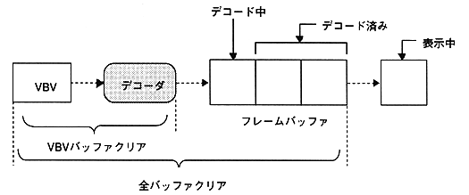

(b) Clear timing
∙ Due to the nature of the MPEG video stream, clearing the VBV buffer after the start of decoding I or P picture will lead to a very clean connection. At other timings, the response is slightly better, but the same frame is output or the frame is skipped.